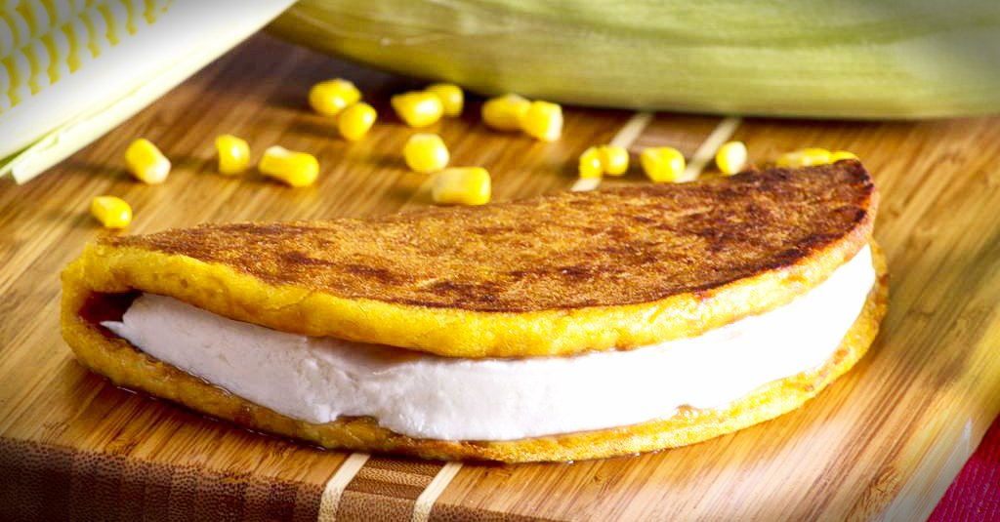
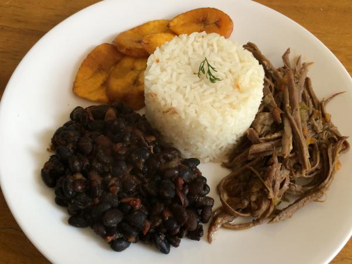

Hola bienvenidos al menu de platillos de Venezuela.
Platillo |
Imagen |
Informacion |
| 1-La Cachapa. |
 | El maíz, ese mágico y dorado grano, adorado por su origen divino desde tiempos precolombinos, ha sido un importante medio de sustento en Latinoamérica; en Venezuela el maíz se transforma noblemente para convertirse en diferentes platos criollos que siempre halagan el paladar de los venezolanos. Entre estos platos encontramos La Cachapa de budare, afamada dama de la culinaria de nuestro país a la que dedicamos este artículo. Se atribuye el origen de la cachapa a la región central venezolana, los indígenas que habitaban las tierras mirandinas cultivaban el maíz, cereal que fue adorado y considerado de origen divino, tan apreciado fue, que su culto se asocio posteriormente con la religión cristiana, acostumbrándose a sembrar granos de maíz en el día San Isidro Labrador para rendir homenaje a los agricultores, costumbre que aún se conserva en algunos pueblos agricultores venezolanos. La Cachapa es una torta fina de maíz molido, con queso y papelón (o azúcar), cocida en budare; es conocida en toda Venezuela pero se consume más en la región central. Esa dulzona y maravillosa transformación del maíz en forma de torta fina y redonda suele acompañarse con un buen "queso e´ mano" y untarse con mantequilla. La receta que proporciono a continuación solo requiere de mucho amor y que se prepare con jojotos muy, muy tiernos. |
|
2-El Mondongo.
|  |
El mondongo o mute, es una sopa espesa con aires españoles, de contenidos diversos, y muy sazonado, pero de sabor inigualable. Se prepara con panza de res, muy limpia y finamente troceada, paticas de cochino blandas y troceadas, diversos vegetales y verduras, cocinados por largo tiempo y acompañado de aliños y especies. Su preparación lleva tiempo, sobre todo la limpieza y preparado de los ingredientes previos a la cocción, es un plato dominguero en las casa de familia venezolanas, pero lo puede encontrar en todo el país en restaurantes de comida criolla. Si se arriesga a preparar este potaje ponga atención a mi receta, que con paciencia y amor por la cocina, puede preparar esta sopa deliciosa y cargada de ingredientes. Con este potaje puede dejar a más de un comensal con la frente llena de sudor, de tan cálida y delicioso sabor. |
|
3-Pabellón Criollo.
|
 |
El pabellón criollo ó pabellón venezolano es uno de los platos más representativo de nuestra cocina. Lleno de colores y sabores variados, posiblemente evoca la unión de las etnias que integran nuestro pueblo, lleva el aroma único y cálido de esta tierra. El pabellón es un plato que nos ha acompañado a lo largo de nuestra historia, ha crecido con nosotros, con pequeñas variaciones en las diferentes regiones de Venezuela, pero manteniendo siempre la esencia única y pura del plato nacional por excelencia, es representativo de la dieta criolla urbana principalmente, es difícil precisar el origen del plato, pero ya a finales del siglo XIX era reconocido en Caracas. Se compone de Arroz Blanco, Carne Mechada, Caraotas Negras y Tajadas de Plátano Frito, dispuestos todos de forma ornamental destacando al máximo su color, aroma y sabor. En este plato se crea un equilibrio entre todos sus componentes, tanto en color como en sabor, cada uno es parte importante de la culinaria venezolana. |